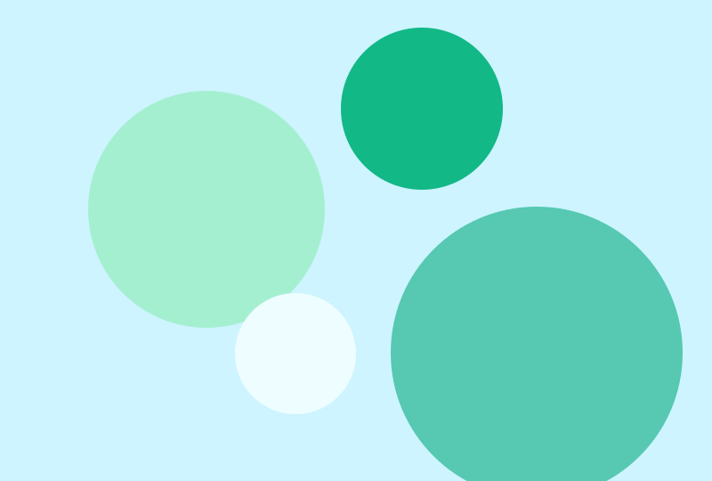
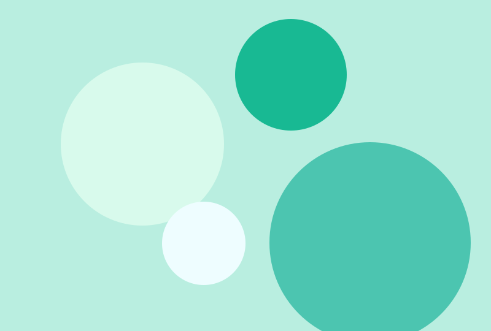

صبحانه
یک لیوان آب ساده برای آغاز آرام صبح.


آب پس از عبور آرام از سنگها به چشمه میرسد. همین مسیر، طعم هر جرعه را میسازد.
یک لیوان آب ساده برای آغاز آرام صبح.
حبابهای ریزِ آب گازدار کنار وعدهٔ اصلی.
طعم میوه، خنک و سبک با چند تکه یخ.
شهر و طعم مورد علاقهات را بنویس تا فایل درخواست فروشگاه را برداری.
 انتخاب این قالب
انتخاب این قالب